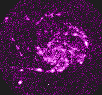
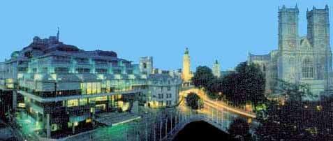
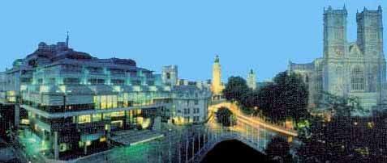
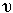

Signs for technical/specialized vocabulary
David Bar-Tzur
Links updated monthly with the help of LinkAlarm.

 

Ultraviolet image of the spiral galaxy M1011; the Uranium Institute (London).2
EXPLANATION OF THE GLOSSING SYSTEM
(to understand how I describe the signs in this dictionary).
For content knowledge of how to use the physics terms in context, see Guided tutorial in physics for interpreters.
For negotiating and developing temporary signs, see Preparation and sign negotiation
For vocabulary lists to determine helpful signs for a specific discipline, see Vocabulary lists by topic.
- Ujima
- WORK TOGETHER HELP-me HELP-you.
- Ujumaa
- E-MONEY + (2h)[F], interlink FTs and move in horizontal circle.
- ulcer, ulceration
- ~ in the digestive tract
- U-L-C-E-R.
- ~ on one's mouth
- [S] holds thumbside against corner of mouth and opens to a [5:].
- ~ on one's penis
- NDH [1], PO > DS, FO away, represents penis and DH is held against DS of NDH, opening from [S] to [5:] to represent the growth.
- ~ on one's vagina
- NDH [L], PO > signer, FO down, represents vagina and DH is held against DS of NDH, opening from [S] to [5:] to represent the growth.
- ultra high frequency
- U-H-F.
- ultra high vacuum
- U-H-V.
- ultra high voltage
- U-H-V.
- ultra large scale integration
- U-L-S-I.
- ultraviolet
- ~
- U-V.
- ~ alpha
- U-V-A.
- ~ beta
- U-V-B.
- umbilical cord
- Thumbside of [F] is placed against the site of the umbilicus and then drawn away from the belly.
- umbilicus
- Thumbside of [F] is placed against the site of the umbilicus.
- umbra
- DARK, (2h)bC-CL circular shape.
- Umoja
- (2h)[F], interlink FTs and move in horizontal circle.
- umpire
- (1) V:-CL held to mouth like a whistle and taps twice. (2) JUDGE.
- un- (prefix, negation)
- NOT.
- unadjusted
- (1) NOT CHANGE. (2) CHANGE NOT-YET.
- unbeliever
- NOT BELIEVE SAME-AS-me (or us).
- uncap
- ~ (general)
- [5:], PO down, is held against top of [S], PO > DS, FO away, then is removed while supinating.
- ~ (a lens)
- [5:], PO > NDS, FOs up, starts by covering thumbside of [C], PO away, FO up, and moves > DS as if uncapping it.
- unclean
- FILTHY = [S] is held under chin and opens explosively into a [5] with an appropriately negative facial expression.
- Uncertainty Principle (Heisenberg's, physics)
- (2h)[S], POs down, alt. rise and fall + P-LAW.
- uncompressed density
- "D" BEFORE COMPRESS, where the last sign is (2h)[5:], POs ><, with the fingers curled back compresses an imaginary object.
- unconditioned
- [C], PO away, FO up, rest on wrist of [S], PO down, FO away, and both descend together + NOT YET.
- unconscious
- ~ (faint)
- [K] touches middle finger to temple, then moves to touch NDH [B] with pinkie side while DH changes to [O]. For a QuickTime movie of this sign, see ASL browser - unconscious.
- ~ (psychology)
- FT of [X] taps back of head.
- unconstitutional
- FOLLOW C-LAW, NOT.
- undamped (harmonic oscillations)
- NOT + (2h)[5], PO down, FO away, hands move down in small "damped" movements.
- undefined
- MEANING HAVE-NONE, CALLED U-N-D-E-F-I-N-E-D. E.g., "Division by zero is undefined." Translation: SUPPOSE DIVIDE B,O-CL'zero in denominator', MEANING HAVE-NONE, CALLED U-N-D-E-F-I-N-E-D. Later you can drop the fingerspelling.
- Underwriters Laboratories
- U-L.
- undress
- Grasp clothes with (2h)[S], throw them down with hands opening to (2h)[5] + CLOTHES. For a QuickTime movie of this sign, see ASL browser - undress. It actually makes more sense to sign this CLOTHES first.
- unemployment
- ~ (labor)
- NOT WORK.
- ~ (resource)
- NOT USE.
- uniform
- ~ (adj)
- ~ (over space)
- HOMOGENEOUS.
- ~ (over time)
- REGULAR.
- ~ (n)
- (2h)[Y], POs > signer, FOs ><, hands move up and thumbs touch above wait, then move down and little fingers touch legs.
- uniform circular motion
- MOVE CIRCLE REGULAR"mm", where the last sign is (2h)[1], POs ><, FOs away, DH moves in a circle parallel to the chest and strikes the NDH as it passes.
- unijunction transistor
- U-J-T.
- unilateral
- ONLY ONE + Run palm of [B] down side of chest.
- uninterruptible power supply
- U-P-S.
- union
- ~ (labor)
- U-GROUP.
- ~ (Math)
- DH [1] draws "U" in air.
- unique
- ONLY-ONE. E.g., "A function is a rule that associates a unique output value with each element in the set of possible input values."
Translation: F-U-N-C-T-I-O-N, ITSELF R-LAW EXPLAIN HOW? (<) INPUT VALUE, PRODUCE (>) ONLY-ONE INPUT VALUE.
- unistream
- NDH [5] and DH [1]; POs down, FOs ><, move so that FOs are away and then move away, with NDH touching DH from above.
- unit
- ~
- U-N-I-T.
- ~ distance
- SEPARATE HOW MUCH? ONE* U-N-I-T.
- ~ of length
- U-N-I-T SHOW LENGTH. I usually avoid spelling O-F since it muddies the concept.
- Unitarian
- U-PERSONAL(ITY). (< belief that the exact nature of God is a personal decision for each congregant.)
- Unitarian Universalist
- U-U.
- United Arab Emirates (دولة الإمارات العربية المتحدة)
- [bC] brushes FT against cheek from ear to chin as if outlining the beard. For a film of this sign, click on United Arab Emirates (دولة الإمارات العربية المتحدة).
- United States
- (2h)[5] interlaced, FOs away from signer, circles horizontally. (< the interlaced wooden pole fences or the 13 Original States working together.) To see the reference source for the sign(s) for this country or to look up other countries in the same geographical area, see Indigenous signs for countries. To find signs for cities within this country (some have no entries) see Indigenous signs for cities.
- United Way
- U-W.
- universal
- STANDARD, that is, (2h)[Y], POs down, circle horizontally. For a QuickTime movie of this sign, see ASL browser - universal.
- universal asynchronous receiver/transmitter
- U-A-R-T.
- Universalist
- U-WORLD. (< belief in universal salvation for all.)
- universality (Physics)
- PHYSICS HOMOGENOUS, where the last sign is 2h)[Y], POs down, FOs away, circle horizontally. For a QuickTime movie of this sign, see ASL browser - standard.
- universal product code (barcode)
- U-P-C.
- universal synchronous/asynchronous receiver/transmitter
- U-S-A-R-T.
- universal time code
- U-T-C.
- universe
- (1)WORLD THEREABOUTS"elelel". (2) U-WORLD. For a QuickTime movie of this sign, see ASL browser - universe.
- university
- U-COLLEGE.
- unix to unix copy program
- U-U-C-P.
- unknown
- ~ (chemistry, as in "determine the unknown (chemical)".)
- CHEMICAL, DON'T-KNOW. Don't simply sign DON'T-KNOW, because you need a noun (CHEMICAL).
- ~ (math, as in "an equation with two unknowns".)
- VALUE, DON'T-KNOW. Don't simply sign DON'T-KNOW, because you need a noun (VALUE).
- Unleavened Bread (World-Wide Church of God)
- DH [C], PO > NDS, FO away fro signer, presses thumb against backhand of NDH [B], PO > signer, and DH closes to [O^] + BREAD. The sign looks like DEFLATED-EGO, but with a different PO.
- unless
- U-N-L-E-S-S.
- unmotivated
- (2h)[B], rub hands together, then with NDH held in place, the DH falls straight down.
- uninilennium
- U-N-E. For more information on this and other elements, see The elements. And for fun, see Elements by Tom Lehrer. To see this song with captions, go to The Elements song by Tom Lehrer.
- unnilhexium
- U-N-H. For more information on this and other elements, see The elements. And for fun, see Elements by Tom Lehrer. To see this song with captions, go to The Elements song by Tom Lehrer.
- unnilquadium
- U-N-Q. For more information on this and other elements, see The elements. And for fun, see Elements by Tom Lehrer. To see this song with captions, go to The Elements song by Tom Lehrer.
- unniloctium
- U-N-O. For more information on this and other elements, see The elements. And for fun, see Elements by Tom Lehrer. To see this song with captions, go to The Elements song by Tom Lehrer.
- unnilpentium
- U-N-P. For more information on this and other elements, see The elements. And for fun, see Elements by Tom Lehrer. To see this song with captions, go to The Elements song by Tom Lehrer.
- unnilseptium
- U-N-S. For more information on this and other elements, see The elements. And for fun, see Elements by Tom Lehrer. To see this song with captions, go to The Elements song by Tom Lehrer.
- unpack
- [flattened C], PO away, FO up, is held in palm and springs up to a regular [C].
- unpacked
- NOT [C], PO away, FO up, touches thumb to NDH [B], PO up, FO > DS, and DH closes to [flattened C].
- unsaturated fat
- NOT + NDH [B], PO down, FO > DS, DH [5], PO down, FO away, is held low and wiggles while rising until it arrives and strikes the NDH from below + F-A-T.
- unveiling (Jewish)
- ONE-YEAR LATER SET-UP GRAVE STONE. A Jewish term.
- up
- ~ (quark)
- "U" PARTICLE.
- ~ (stage lighting)
- [O^], PO down, FO away, descends while opening into a [5^].
- up arrow
- Point up, then FS A-R-R-O-W.
- update
- CATCH-UP, that is, (2h)[A], POs > DS, DH twists so that PO is now > NDS and touches NDH from behind.
- updated
- UPDATE FINISH.
- upflow (HVAC)
- (2h)[O^], POs away, are lifted side by side and then separate several times while opening to (2h)[5^].
- upgrade
- (2h)[B^], POs ><, FOs up, move upwards arcing towards the signer. For a QuickTime movie of this sign, see ASL browser - advanced.
- upload
- (2h)[4], right hand PO down, left hand PO up, moves at a diagonal upwards towards the right side repeatedly.
- uppercase
- To show that a letter is uppercase (capital), show the fingerspelled letter on the DH and place the NDH [bC], PO > DS, FO up, next to the letter with pc. E.g., uppercase D:
_____pc
"D"---->
[bC]-CL.
- upper extremity
- (2h)[B], POs down, hands overlap completely at waist, DH on top. DH rises to head to show the entire region from waist up.
- upper memory block
- U-M-B.
- uppers
- (1) [A dot] is held with thumb pointing up and ascends slightly twice. (2) Can add PILL (which see) + (1).
- upsilon, 
- Draw the shape of the letter in the air with the index finger.
- up stage
- ~ (command)
- Move [1] diagonally > DS and up, pointing in the same direction.
- ~ (location)
- Fingerspell U-S while moving hand diagonally > DS and up.
- upstream (computers)
- START PLACE (2h)[5], POs down, wg while moving > signer.
- uptime
- (1) Point upwards + TIME. (2) More accurately, point upwards + TIME-PERIOD, where the second sign is T-HOUR. For a QuickTime movie of TIME-PERIOD, see ASL browser - time.
- upward compatible
- Point upwards + MATCH.
- up weld
- [L], PO > NDS, FO away, runs UP the side of the index finger in [B], PO away, FO up.
- uracyl
- "U".
- uranium
- "U". For more information on this and other elements, see The elements. And for fun, see Elements by Tom Lehrer. To see this song with captions, go to The Elements song by Tom Lehrer.
- urban
- CITY POSS.
- ureter
- (2h)[K], POs down, taps sides where kidneys are located and then (2h)G-CL travel from kidneys down to bladder.
- urethra
- G-CL travels from bladder down and away from body as if out the penis.
- ureter(s)
- FTs of (2h)[G] trace ureters from kidneys to urinary bladder (in belly).
- urethra (female)
- "T" (mouth "urine") + FT of [G] trace urethra from belly to groin.
- urethra (male)
- "T" (mouth "urine") + FT of [G] trace urethra from belly to groin and out penis.
- urinalysis
- URINATE, ANALYZE.
- urinate, urination
- ~
- (1) [P] touches middle finger to tip of nose, then pronates. (2) [P] holds middle finger against tip of nose while NDS repeatedly puffs its cheek. (4) "T".
- pain with ~
- URINATE, PAIN.
- urinary bladder
- "T" (mouth "urine") + (2h)[C] tap FTs together at belly.
- urine
- (1) "T". (2) YELLOW + [P] touches middle finger to nose then moves to DS while pronating.
- Uruguay
- "U". To see the reference source for the sign(s) for this country or to look up other countries in the same geographical area, see Indigenous signs for countries. To find signs for cities within this country (some have no entries) see Indigenous signs for cities.
- use
- (1) Wrist of [U], PO away, FO up, circles and brushes against the wrist of [U], PO down, FO away. (2) Wrist of [U], PO > signer, FO up, circles and brushes against the wrist of [U], PO down, FO away. (3) [U], PO away, FO up, circles in a vertical plane parallel to the chest.
- use drugs
- The pinkie side of [S] is jammed multiple times into inside joint of elbow.
- user datagram protocol
- U-D-P.
- use-up, used-up
- [C] travels down palm of [B], PO up, FO away, past FT while closing to an [S].
- Usher syndrome (not Usher's syndrome)
- [U] touches temple, then [S] touches side of chin.
- uterus
- ~
- U-T-E-R-U-S.
- classifier for ~
- Use O^-CL, PO down to show
expansion or contraction of womb until it expands into 5:-CL, PO > belly, moving away from belly.
- utility, utilities
- ~ (computers)
- SERVE.
- ~ (electricity, water, gas, etc.)
- U-T-I-L-I-T-Y.
- ~ (philosophy)
- [C] travels up palm of [B], PO up, FO away, towards wrist while closing to an [S] and ascending + with NDH held in place, DH [F], PO away, FO up, jerks forward.
- utilitarianism
- GO-AHEAD + [C] travels up palm of [B], PO up, FO away, towards wrist while closing to an [S] and ascending repeatedly while both hands shift > DS. This second sign can be thought of as TAKE-ADVANTAGE"each".
Image credits
1. Ultraviolet gallery.
2. From http://www.uilondon.org/sym/subindex.htm (The Uranium Institute [London]). This site is no longer extant.

Home